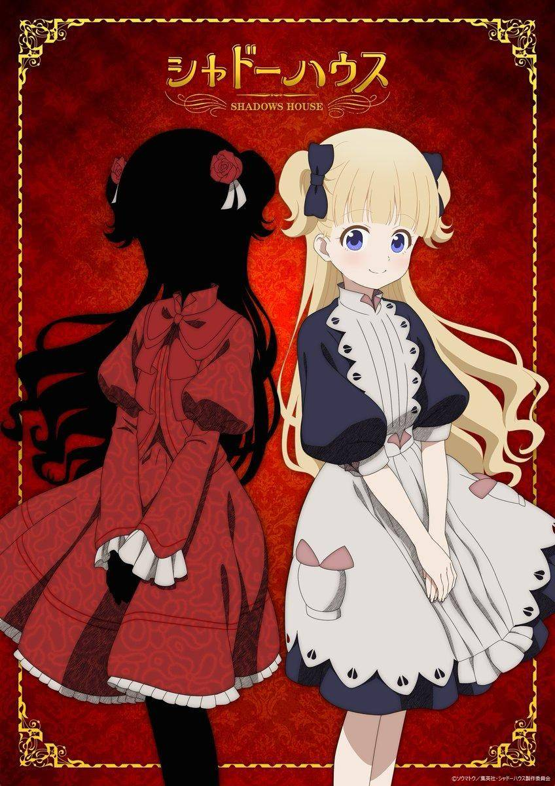
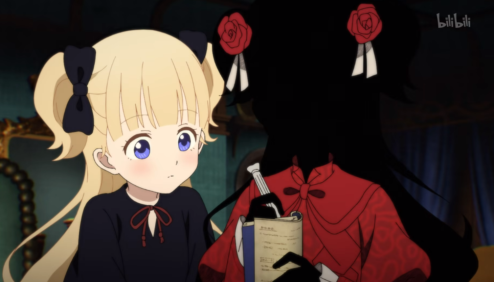
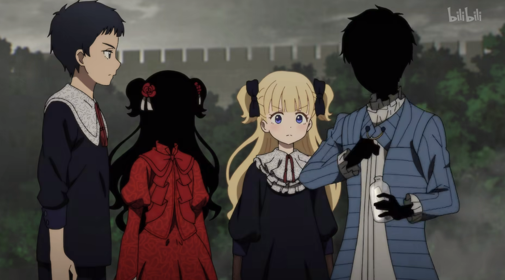
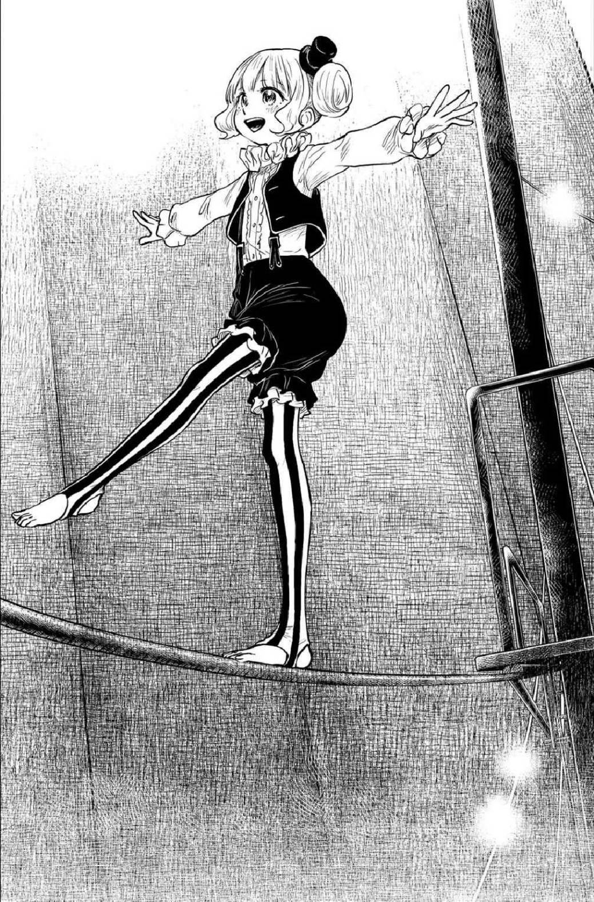
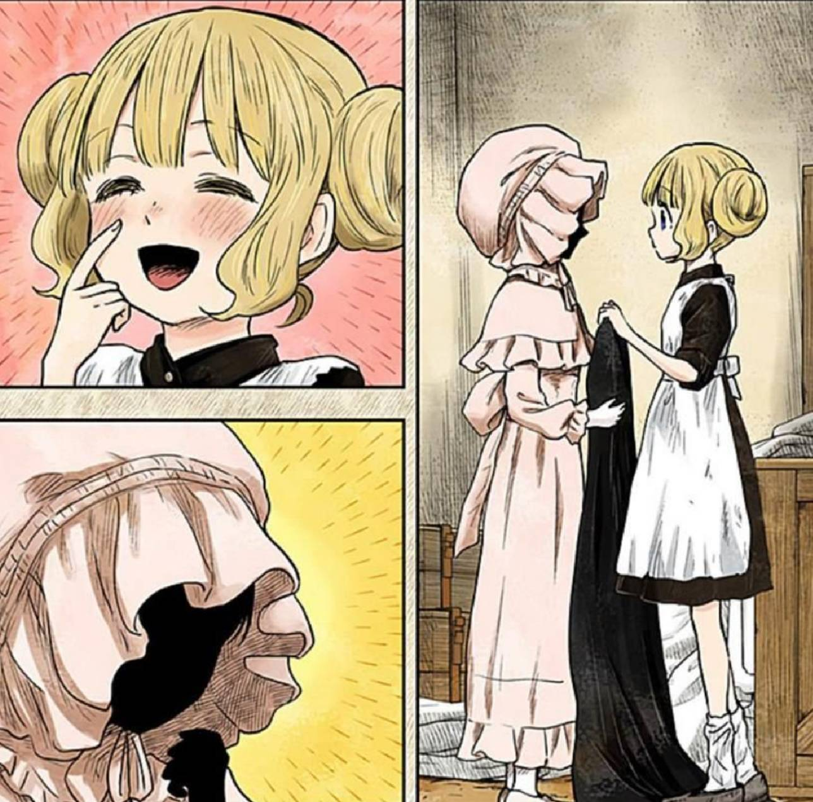
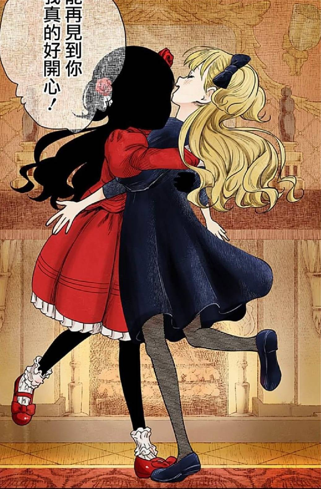

凱特與艾蜜莉可
點
我
回
主
頁

凱特（ケイト，聲：鬼頭明里）
全名是「凱特·鏡」，且在擬態成艾蜜莉可前就有人型形態，自稱是為了奪回鏡宅而行動。是影宅前身鏡宅的繼承人，尚在懷孕的母親被妖精合二為一，因此母親懷孕50年後才生下她，並且母親在生下她後便去世，之後是由母親的侍女假裝成她的祖母扶養她長大。她在12歲生日前都像是正常的人類，但後來全身被黑灰覆蓋自認無法再和祖母生活，為了找出自己的真相而自行出發前往影宅。在活動於影宅領地的村莊時與人類時期的艾蜜莉可相識，並將華麗洋裝交給參加選拔會的艾蜜莉可，艾蜜莉可則是將縫製的娃娃交換給凱特。現年紀為13歲。


艾蜜莉可（エミリコ，聲：篠原侑(日本)）
人類時期是沒有名字的孤兒，並非是影宅領地的村莊出身，而是到其村莊表演的馬戲團成員。年紀不詳，大約為11歲。在表演那一天的早上與凱特相識，後因想到相識的事而導致表演失誤。被馬戲團開除後，在尚恩一行人的遊說下將自己混入選拔會，並在選拔名單中留下「凱特」這個名字。活人偶時期的名字來源於凱特的養祖母「艾蜜莉」。
雖然被尚恩和帕利克喜歡，但自己本人完全沒有察覺。


